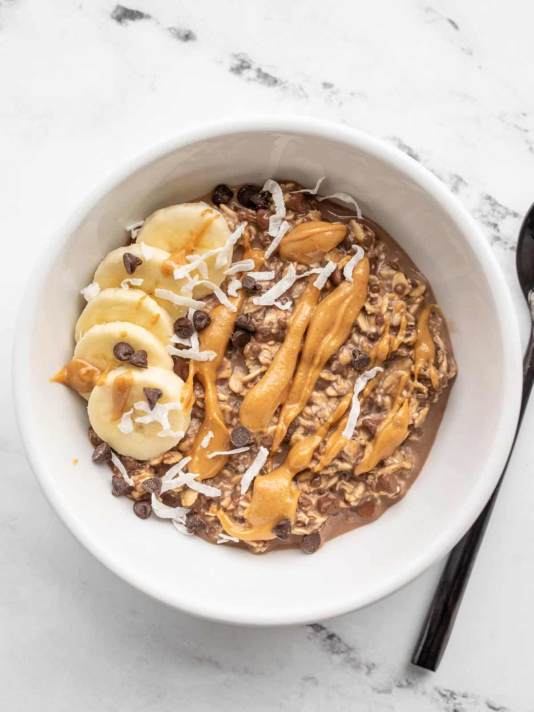

Double Choclate Overnight Oats

An easy breakfast recipe, perfect for those busy peopple with no time to focus on cooking.
Make these the night before and sleep without worry.
Ingredients
- 1 1/3 cup old-fashioned rolled oats ($0.24)
- 2 Tbsp chia seeds (optional) ($0.44)
- 2 Tbsp unsweetened cocoa powder ($0.07)
- 2 Tbsp brown sugar ($0.08)
- 1/4 cup mini chocolate chips ($0.32)
- 1/4 tsp salt ($0.02)
- 1 1/3 cup milk* ($0.27)
- 1/2 tsp vanilla extract ($0.14)
Steps
- Combine the oats, chia seeds, cocoa powder, brown sugar, chocolate chips, and salt in a bowl.
- Add the milk and vanilla extract, then stir to combine. Allow the mixture to sit for about five minutes.
- Divide the oat mixture between four resealable containers. Close the containers and refrigerate overnight or up to five days.
- Stir the oats just before enjoying. Eat cold or warm it up in the microwave.
Don't Forget To Add Toppings
- Nut or seed butter
- Coconut
- Sliced bananas
- Walnuts, pecans, or almonds
- Fresh berries
- Raspberry or strawberry jam